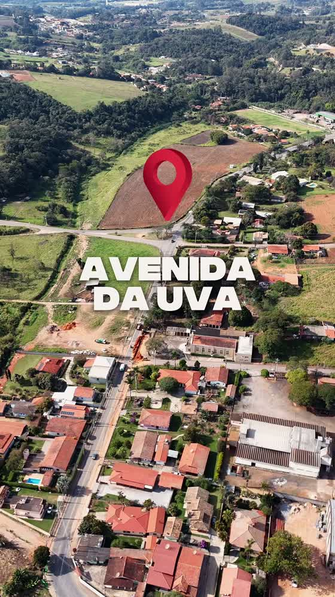
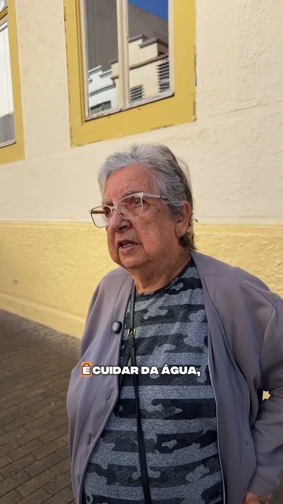
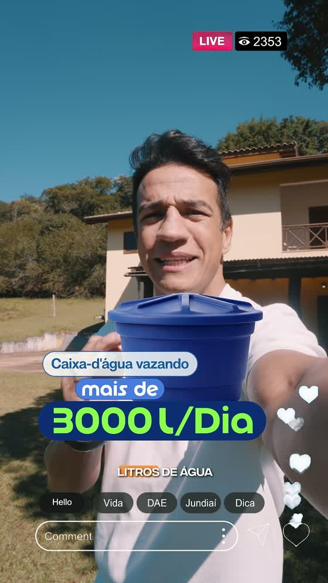

Meta Ads · 07 a 28 de agosto de 2026
Prestação de
Contas
Campanha Temas Diversos · Agosto 2026
DAE Jundiaí
419.323
Impressões
150.271
Contas alcançadas
79.085
Engajamentos
12.214
Visualizações de vídeo
O calendário de agosto tratou do que o morador vive todo dia: o vazamento que ninguém enxerga e aparece na conta, a água que a rotina consome sem que se perceba, a obra que atrapalha o trânsito hoje para resolver o esgoto amanhã, e a equipe que sai para atender quando alguém liga. A veiculação correu de 07 a 28 de agosto, em Meta Ads.
A peça com moradores falando na rua foi a que mais prendeu atenção. A obra da Avenida da Uva, com pouco mais de um décimo das exibições da peça de maior circulação, foi a que mais trouxe gente para perto do perfil.
Quatro linhas de veiculação em agosto, em Meta Ads, todas cumpridas dentro do período de 07 a 28 de agosto.
| Linha de veiculação | Meta | Entregue |
|---|---|---|
| Meta Ads · Impressões | 250.000 | 299.703 |
| Meta Ads · Engajamento | 10.000 | 13.020 |
| Meta Ads · Visualização de vídeo | 10.000 | 12.214 |
| Meta Ads · Cliques no link | 1.000 | 1.234 |
Distribuição percentual do plano contratado entre as quatro linhas, conforme planejamento e orientação do cliente.
| Linha | % do plano | Valor | Meta contratada |
|---|---|---|---|
| Meta Ads · Engajamento | 30% | R$3.000,00 | 10.000 |
| Meta Ads · Impressões | 25% | R$2.500,00 | 250.000 |
| Meta Ads · Cliques no link | 25% | R$2.500,00 | 1.000 |
| Meta Ads · Visualização de vídeo | 20% | R$2.000,00 | 10.000 |
| Total | 100% | R$10.000,00 |
Vídeo · Reels · 47 segundos · peças ordenadas por interação por mil impressões

Vídeo · Reels · 56 segundos · peças ordenadas por interação por mil impressões

Vídeo · Reels · 59 segundos · peças ordenadas por interação por mil impressões

Top 3 de novos seguidores, comentários e compartilhamentos, com o número absoluto e a taxa de cada entrada.
Seis peças no ar ao longo do mês, cobrindo consumo consciente, obras de saneamento, relação da DAE com a cidade e atendimento.
O que cada plataforma registrou no período de 07 a 28 de agosto, apurado direto na fonte.
| Métrica | Volume |
|---|---|
| Impressões | 227.256 |
| Engajamento | 63.828 |
| Visualização de vídeo | 16.394 |
| Cliques no link | 882 |
| Métrica | Volume |
|---|---|
| Impressões | 191.848 |
| Engajamento | 15.141 |
| Visualização de vídeo | 2.725 |
| Cliques no link | 513 |
Distribuição das impressões por faixa de idade e por gênero, apurada na plataforma.
| Faixa | Feminino | Masculino | Não informado | Total |
|---|---|---|---|---|
| 18 a 24 | 42.523 | 37.698 | 344 | 80.565 |
| 25 a 34 | 32.949 | 43.091 | 209 | 76.249 |
| 35 a 44 | 19.676 | 29.781 | 141 | 49.598 |
| 45 a 54 | 26.273 | 36.597 | 104 | 62.974 |
| 55 a 64 | 34.559 | 37.001 | 63 | 71.623 |
| 65 ou mais | 43.409 | 34.645 | 66 | 78.120 |
| Total | 199.389 | 218.813 | 927 | 419.129 |
Cruzamento entre as pautas que a campanha veiculou e o que a imprensa independente de Jundiaí noticiou no mesmo período.
Seis peças no ar entre 07 e 28 de agosto, as quatro linhas contratadas cumpridas e um retrato claro de quais pautas a cidade acompanha em silêncio e quais fazem o morador se aproximar.
O que a leitura de agosto sugere para o trabalho de comunicação da DAE.